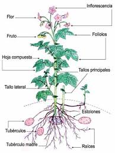
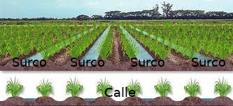
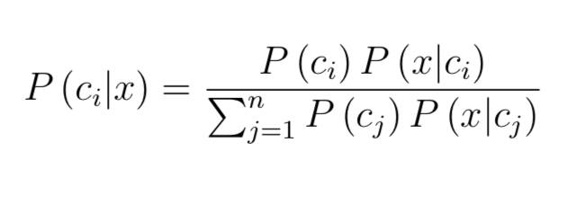
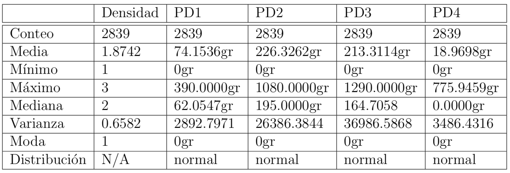
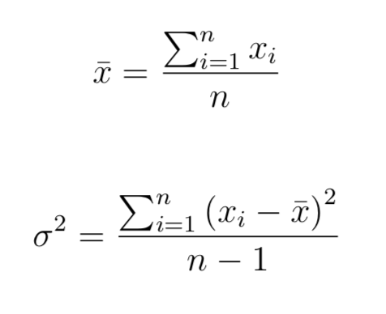
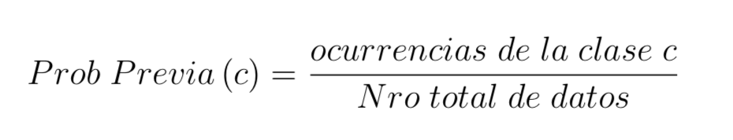
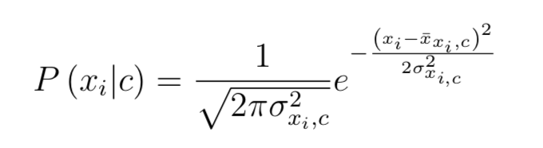
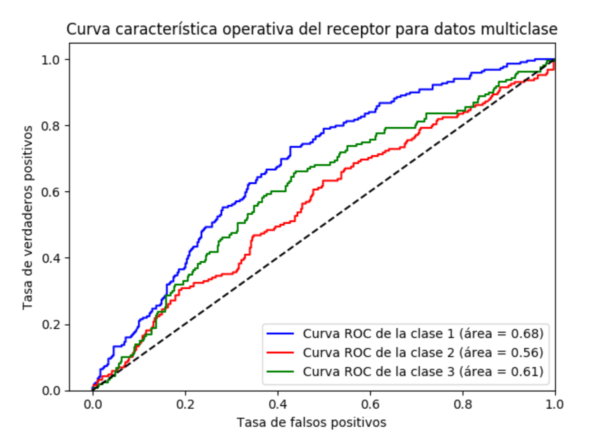

Universidad Nacional Experimental del Táchira
Vicerrectorado Académico
Departamento de Aplicación Profesional
Diseño de una clasificador de tubérculos de papa criolla para diferentes densidades de siembra según el peso fresco por calibre empleando Bayes Naive.
Autor: Estefany Salas - estefany.salas@unet.edu.ve
Tutor: Dra. Rossana Timaure - rttg@unet.edu.ve
Julio, 2019.
Capítulo 1: Preliminares
- Planteamiento y formulación del problema
- Objetivos
- Aportes de la investigación
Planteamiento y formulación del problema

Objetivo General
Diseñar un clasificador de tubérculos de papa criolla para diferentes densidades de siembra según el peso fresco por calibre empleando Bayes Naive.
Objetivos Específicos
-
Diagnosticar el formato de las variables de entrada y salida para el clasificador.
-
Establecer el tipo de algoritmo Bayes Naive a emplear y las características para el entrenamiento.
-
Implementar el algoritmo de clasificacio ́n basado en Bayes Naive.
-
Realizar las pruebas de funcionamiento y la comparación estadística.
Aportes de la investigación
-
Estudio exploratorio de algunas características de la papa criolla Solanum phureja que pudieran usarse para la clasificación basándose en la distribución espacial de la densidad de siembra.
-
Herramienta para clasificación y evaluación de la misma.
Capítulo 2: Fundamentos Teóricos
- Antecendentes
- Bases Teóricas
Antecedentes
- Bacteria Identification from Microscopic Morphology using Naïve Bayes. Mohamad, N., Jusoh, N., Htike, Z., Lei Win, S. (2014).
- Classification of Selected Apple Fruit Varieties using Naïve Bayes. Misigo, R., Miriti, E. (2016).
- Evaluación del Rendimiento en Papa Criolla (Solanum phureja) variedad Yema de Huevo, bajo diferentes Densidades de Siembra en la Sabana de Bogotá. Arias, V., Bustos, P., Ñústez, C. (1996).
Bases Teóricas
- Probabilidad Condicional
- Teorema de Bayes
- Inferencia Bayesiana
- Clasificador Bayes Naive
- Bayes Naive Bernoulli
- Bayes Naive Multinomial
- Bayes Naive Gaussiano
- Curva Característica Operativa del Receptor
- Papa criolla (Solanum Phureja)
- Glosario
Morfología de la papa criolla (Solanum Phureja)
Disposición de las plantas en una siembra
Inferencia Bayesiana
El enfoque Bayesiano se caracteriza por tratar todas las fuentes de incertidumbre usando probabilidades, es decir, ni el modelo para explicar un conjunto de datos observado ni sus parámetros son fijos, se tratan como variables inciertas.
Teorema de Bayes
P(Ci) representa la probabilidad previa del valor de una variable aleatoria Ci antes de observar X, luego de observar X se obtiene la probabilidad posterior P(X|Ci) que indica el grado de creencia actualizado sobre un sistema incierto luego de haber hecho algunas observaciones al respecto.
Teorema de Bayes
Luego se emplea la Ley de la Probabilidad Total con el conjunto de probabilidades posteriores obteniendo así
Donde P(Ci|X) es la probabilidad condicional de Ci influenciada por X
Capítulo 3: Fundamentos Metodológicos
- Enfoque de la investigación: cuantitativo
- Tipo o nivel de investigación: de campo y correlacional
- Diseño de la investigación: no experimental cuantitativa y transeccional correlacional-causal
- Metodología CRISP-DM
Metodología CRISP-DM (Cross Industry Standard Process for Data Mining)
Esta metodología fue empleada para el desarrollo del algoritmo, sus fases son las siguientes:
- Comprensión del problema
- Comprensión de datos
- Preparación de datos
- Modelado
- Evaluación
Capítulo 4: Desarrollo
1. Comprensión del problema
1.1. Determinar los objetivos del problema
1.2. Evaluación de la situación
1.3. Determinación de los objetivos del proyecto propuesto
1.4. Producción de un plan del proyecto
2. Comprensión de datos
2.1. Recolección de datos iniciales
2.2. Descripción de los datos
2.3. Exploración de datos
2.4. Verificación de la calidad de los datos
2.2. Descripción de los datos
Durante esta etapa se estudian los atributos, que son densidad, PD1, PD2, PD3 y PD4, a cada uno de estos atributos se le realizó un análisis estadístico descriptivo que se detalla a continuación
2.2. Descripción de los datos
Gráficos de dispersión de las variables PD1 y PD2
2.2. Descripción de los datos
Gráficos de dispersión de las variables PD3 y PD4

2.3. Exploración de datos
Matriz de correlaciones para cada densidad
2.3. Exploración de datos
Histogramas de las variables PD1 y PD2
2.3. Exploración de datos
Histogramas de las variables PD3 y PD4

3. Preparación de datos
3.1. Selección de datos
3.2. Limpieza de los datos
3.3. Estructuración de los datos
3.4. Integración de los datos
3.5. Formato de los datos
4. Modelado
4.1. Cálculo de media y varianza
Donde X representa el valor i del conjunto de datos, e i va desde 1 hasta n que representa la cantidad de datos total.
4. Modelado
4.2. Cálculo de probabilidades previas
4. Modelado
4.3. Cálculo de probabilidades posterior
Donde sigma al cuadrado representa la varianza de esa característica en esa clase y la X con la barra horizontal la media para esa característica en esa clase.
4. Modelado
4.4. Obtiene las probabilidades condicionales y las predicciones
Donde se multiplica la probabilidad previa de la clase Ci (la i itera sobre la cantidad de clases) por la probabilidad posterior de que X pertenezca a la clase Ci, y luego se divide entre la sumatoria de la multiplicación de la probabilidad previa de cada clase C por la probabilidad posterior de que X pertenezca a cada una de las clases.
5. Evaluación
5.1. Evaluación de los resultados
5.2. Proceso de revisión
5.3. Determinación de futuras fases
5. Evaluación
5.1. Evaluación de los resultados
